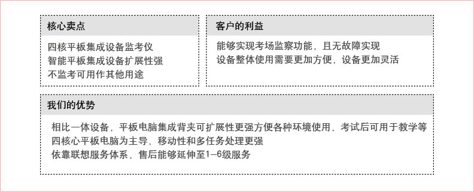

考生身份验证试点整体方案概述
目前考生入场身份验证及老师判罚处理仍采用人工方式，电子监控系统难以于与考场及时互动，为此我们采用创新的考生身份验证系统（C/S架构），实现对考生身份信息的采集验证与管理，杜绝考试期间出现替考现象，确保考试的公平性
标准化考场功能示例
身份验证功能
- 监考老师身份验证:
通过平板电脑软件平台登录界面，输入监考老师信息或刷身份证可以调出本场考试这个老师监考考场的学生信息，从而提高安全性和方便性。
- 考生身份验证:
通过平板电脑软件平台考试身份验证功能，刷考生身份证识别考生信息，达到自动签到功能，从而提高安全性和方便性
如果考生由于特殊原因没带身份证，可以通过考生身份验证功能输入身份证，然后自动签到
该功能提高了老师效率及准确率，并让学生签到自动化
考生违纪处理
- 监考老师发现违纪，可在平板电脑上选择违纪编码，填写违纪情况描述，并可现场拍照，然后保存违纪处理信息
- 可使用mini打印机现场打印处罚单，让违纪考生签字和监考老师签字，达到自动化信息保存，事后可以查询核对，并有纸质处罚单据留底
- 当考场发生特殊情况，监考老师也可以通过文字及拍照形式记录并上传信息到考点中心，有时间、有文字和图片，事后可以查询
视频监控对接
- 目前很多考点已有视频监控系统，考试期间，由监控老师每个人监控3到4个考场
- 一旦发现某考场有异常情况，可告知本考场的监考老师，但目前多数是通过人工方式去通知，会延误时间或耽误监控老师继续监控
- 本系统提供接口给视频监控系统，当发现问题，监控老师可以立即推送消息给对应考场的监考老师，监考老师在平板电脑设备得到提醒，然后马上进行处理，及时方便，两系统无缝对接，相互补长
其他功能示例
版本升级
- 当新的客户端程序更新时，采用OTA方式，自动升级，保证数据和功能最新性、完整性
离线数据处理
- 如果考场没有无线信号（WIFI）或信号不好，系统自动保存这个过程的离线数据，并在退出系统前提醒老师处理这些离线数据，当有信号时，系统自动保存离线数据到远程服务器，并完成系统退出
安全模块
- 每一个平板电脑都要注册自己的硬件信息到后台服务器，并得到后台服务器启用后，这个平板电脑才可以与服务器交互，并得到对应信息
- 这样保证没有启用的硬件设备，既是安装了客户端应用程序也不能工作，同时保证一个设备一个应用，达到安全防护功能
考点数据提取
- 可以分考场、也可以分考点提取对应数据到平板电脑上，做为离线数据保存
- 2012年6月7日，该方案在郑州科技工业学校进行试点，共计20个考场、两场考试，考生身份验证通过率100%、身份证验证的效率为：5分钟内可确保30人通过验证、参考人数1200人、签到人数1151人、旷考率4.01%、违纪人数3人、违纪处理结果均正确记录并同步到后台
标准化考场优化思路
硬件功能扩展，实现多种身份识别手段
利用智能系统扩展性实现综合应用平台
完善、高效的服务体系确保用户体验
联想软/硬件定制能力
硬件方案扩展
软件功能扩展为综合应用平台
完善、高效的售后服务和运维体系

联想移动互联解决方案
联想移动互联解决方案以最终用户的体验为出发点，借助移动互联、大数据分析、云计算等创新技术，通过业务流程的再造，实现了企业资源的合理规划和高效运转。
联想在移动互联领域，通过梳理客户业务流程，整合行业专业应用软件，针对客户的行业特质以及业务需求进行深度定制，目前已储备超过200余项专业解决方案。更多解决方案以及产品、案例、咨询信息，请通过以下入口进入（ID:Lenovomia）：